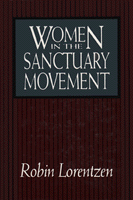

Twenty-nine in-depth interviews with women involved in local sanctuary sites
Twenty-nine in-depth interviews with women involved in local sanctuary sites


 Twenty-nine in-depth interviews with women involved in local sanctuary sites
Twenty-nine in-depth interviews with women involved in local sanctuary sites

|  |
Women in the Sanctuary MovementRobin Lorentzencloth EAN: 978-0-87722-768-7 (ISBN: 0-87722-768-3) |
The sanctuary movement in the United States began in the 1980s in response to growing numbers of Central American refugees seeking political asylum. While the media portray male clerics as the leaders of this religious-based political movement, women outnumber men at all levels of organization. Using twenty-nine in-depth interviews with women involved in eight local sanctuary sites, Robin Lorentzen explores the workings of the sanctuary movement; the reasons for their commitment to this illegal activity; the relationship between their activism, liberation theology, and feminism; and the tensions among the women and between women and men in the movement.
Lorentzen documents how women—primarily white, middle-class housewives and nuns—actually produce the movement in religious and community settings, mobilizing family, church, and community resources to reconstruct the refugees� lives. This richly detailed ethnographic study is supported throughout with colorful excerpts from the author�s interviews with participants. The women themselves relate the intense commitment, frenetic preparation, heartrending joy, and exhaustive burnout that constantly accompany their involvement with the refugees, Lorentzen explores the inherent tensions between humanitarian and political impulses within this woman-based movement and describes the challenges faced by various religious and civic communities.
Acknowledgments
1. Introduction
Sanctuary as a Women's Movement •
Sanctuary as a Political Process
2. A Natural History of the Chicago Movement
Origins and Development •
Stages of Involvement
3. Ideological Splits
Tucson and Chicago Leaders •
Local Men and Women •
Laywomen and Women Religious
4. Patterns and Conflicts in Women's Activities
Leadership •
Outreach •
Translating •
Civil Disobedience •
Travel to Central America •
Caretaking •
The Impact of Background on Activism
5. Stages in Activist Women's Lives
Humanitarian Path •
Religious Path •
Political Path •
Integration of Paths
6. The Effects of Life Structure
Family Conflict and Support •
Women's Views of Liberation
7. Conclusion
Women in Social Movements •
The Future of Sanctuary
Appendix
Notes
Index
 | Robin Lorentzen teaches Sociology in the Anthropology/Sociology Department at Albertson College of Idaho. |
Sociology
Women's Studies
Religion
Women in the Political Economy, edited by Ronnie J. Steinberg.
No longer active.
Women in the Political Economy, edited by Ronnie J. Steinberg, includes books on women and issues of work, family, social movements, politics, feminism, and empowerment. It emphasizes women's roles in society and the social construction of gender and also explores current policy issues like comparable worth, international development, job training, and parental leave.
© 2015 Temple University. All Rights Reserved. This page: http://www.temple.edu/tempress/titles/708_reg.html.